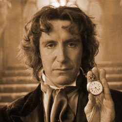

|  |
The eighth Doctor was portrayed by Paul McGann. McGann portrays the eighth such incarnation, a passionate, enthusiastic and eccentric character. His only companion in the television movie is Grace Holloway (Daphne Ashbrook), a medical doctor whose surgery is responsible for triggering his regeneration. The Eighth Doctor made his first television appearance in the 1996 Doctor Who television movie, the first television return since 1989. The movie attracted over 9 million viewers in the United Kingdon and somehow managed to draw over 5% of the US audience, according to Nielsen Ratings. In the United Kingdom it received generally positive reviews. It was also generally well received in Australia. |